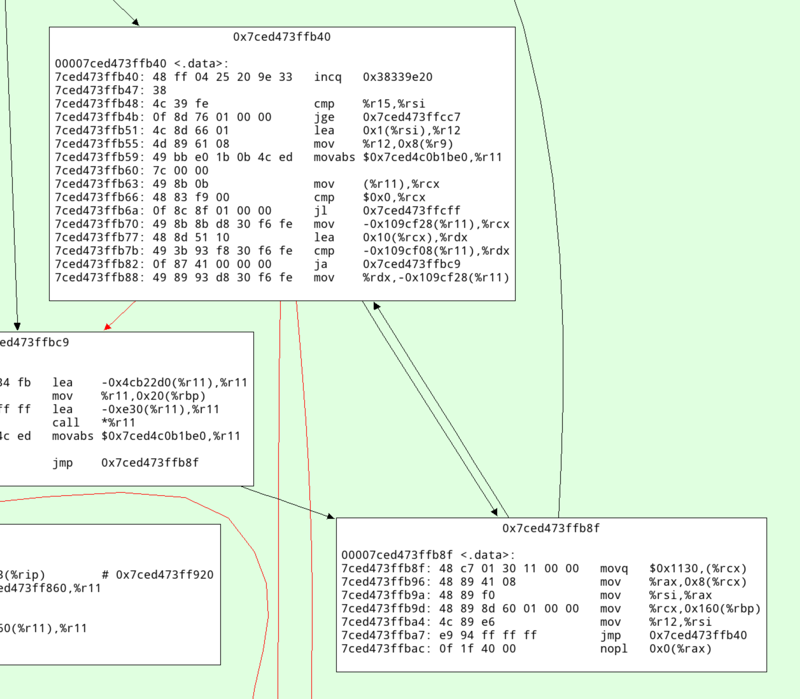

PyPy v8.0.0 release
PyPy v8.0.0: release of python 2.7, 3.11, and 3.12 beta released 2026-09-19
The PyPy team is proud to release version 8.0.0 of PyPy after the previous release on May 26, 2026. This is a major new version, hence the bump to 8.0.0. It is our first release of Python 3.12, which may still have some bugs so we are calling it "beta" quality.
Why the move to 8.0.0
glibc2.28
We have updated our linux buildbots (linux64, linux32, aarch64) to use manylinux_2_28 images based on AlmaLinux 8 and glibc 2.28. These use gcc14 instead of the gcc5 previously used. So our compiled tarballs will require at least glibc2.28, which should be universally supported by now (Ubuntu 24.04 uses glibc2.39). In order to prevent confusion, we felt bumping the major version would be prudent.
cp12-abi3 support
PyPy's Python 3.12 support comes with a new model for the C layer PyObject.
In order to link the C object to the internal RPython one, we have an extra
field in the object ob_pypy_link, as described in-depth in
rawrefcount-and-the-gc. In previous versions, this field was
visible in a way that makes the PyObject struct different from the CPython
one. From v8.0.0, we "hide" the PyPy-only extension in a prefix before
the pointer we hand off to C-extension modules. The goal of this work is to
allow PyPy to use cp312-abi3 wheels produced for CPython 3.12 and up, using the
limited ABI. The required pieces have all been put in place:
PyPy's C headers, including struct definitions like
PyObject, are compatible with CPython's C headers when definingPy_LIMITED_API=0x030C0000PyPy no longer mangles exported function names from the limited API. In PyPy3.11 and earlier, functions like
PyTuple_Newwere exported asPyPyTupleNew.
Still missing: the import machinery must be taught that abi3.so shared objects are valid for PyPy, and the larger ecosystem (pip, uv) must also accept that cp312-abi3 wheels are valid candidates for installation.
Yes, this is a big step. We are working with Cython and PyO3 to make sure it all will Just Work™. Hopefully this will make it easier for packages to support PyPy.
What is new in RPython code generation
PyPy is written in RPython, and has code generation to translate RPython into C as part of the VM build process. We have made some improvements to code generation in attempts to speed up the base interpreter. While the speedups have not been that impressive, we have made some steps forward:
We now use computed gotos and more aggressively inline code. While this produces more compact sources, it does not boost performance as much as we wished.
The source code includes comments mapping the source back to the RPython code that generated the block. This is very helpful to see exactly what is going on, and may enable further improvements.
Dropping HPy
We have dropped the internal HPy backend for PyPy. The HPy project's understanding of how to use handles instead of pointers was a good prototype, but the project did not attract enough supporters to become a new standard. The code is still in the PyPy codebase, and can be toggled on with a build option.
A revived tool comparing headers and exported functions
We revived the clang-based pyhdrdump to compare PyPy's header files to CPython's header files. See the README for more information on how it works and how to use it.
Interpreters
The release includes three different interpreters:
PyPy2.7, supporting the syntax and the features of Python 2.7 including the stdlib for CPython 2.7.18+ (the
+is for backported security updates)PyPy3.11, supporting the syntax and the features of Python 3.11, including the stdlib for CPython 3.11.16. Barring security issues, this will be the last release to support 3.11.
PyPy3.12, supporting the syntax and features of Python 3.12, including the stdlib for CPython 3.12.14.
The interpreters are based on much the same codebase, thus the triple release.
We recommend updating. You can find links to download the releases here:
We would like to thank our donors for the continued support of the PyPy project. If PyPy is not quite good enough for your needs, we are available for direct consulting work. If PyPy is helping you out, we would love to hear about it and encourage submissions to our blog via a pull request to https://github.com/pypy/pypy.org
We would also like to thank our contributors and encourage new people to join the project. PyPy has many layers and we need help with all of them: bug fixes, PyPy and RPython documentation improvements, or general help with making RPython's JIT even better.
If you are a python library maintainer and use C-extensions, please consider making a CFFI version of your library that would be performant on PyPy. Failing that, PyPy will soon support the cp312-abi3 tag for limited ABI wheels. In any case, cibuildwheel supports building wheels for PyPy.
What is PyPy?
PyPy is a Python interpreter, a drop-in replacement for CPython. It's fast (PyPy and CPython performance comparison) due to its integrated tracing JIT compiler.
We also welcome developers of other dynamic languages to see what RPython can do for them.
We provide binary builds for:
x86 machines on most common operating systems (Linux 32/64 bits, Mac OS 64 bits, Windows 64 bits)
64-bit ARM machines running Linux (
aarch64) and macos (macos_arm64).
PyPy supports Windows 32-bit, Linux PPC64 big- and little-endian, Linux ARM 32 bit, RISC-V RV64IMAFD Linux, and s390x Linux but does not release binaries. Please reach out to us if you wish to sponsor binary releases for those platforms. Downstream packagers provide binary builds for debian, Fedora, conda, OpenBSD, FreeBSD, Gentoo, and more.
What else is new?
For more information about the 8.0.0 release, see the full changelog.
Please update, and continue to help us make pypy better.
Cheers, The PyPy Team
Moving linux builds to GLIBC==2.28
A short note for visibility.
PyPy builds tarballs of the python interpreter ready for
download. These include the latest
releases and also nightly builds, fresh from our fleet of buildbots. Over the
next couple of days, the nightly builds on linux will transition from
manylinux2014 based docker images to manylinux2_28
images. The practical implication is that
nightly images, and the next releases, will require a minimum of GLIBC>=2.28,
i.e. AlmaLinux8, amanzonlinux 2023, debian 10, ubuntu 20.04. For a good
overview of how this glibc/distro/manylinux all works, see the PEP 600 compliance
page.
The next release will indicate this change by a new PyPy major version, 8.0.0. It should include a Python3.12 interpreter, in which case it will be the last release of the Python 3.11 interpreter.
A new benchmark runner for PyPy
The https://speed.pypy.org site has been running the PyPy benchmark suite since 2010. Our first benchmarking machine was called tannit, and it faithfully ran the suite from May 2010 to Dec 2016. For a brief period in the middle we had a machine called speed-python, but tannit was the gold standard. In June 2016 we started running benchmarks on our current machine, benchmarker (Intel i7-7700). It has been graciously sponsored by Baroque Software. Based on an Ubuntu xenial chroot, the machine has been quite stable but over the years has had a few kernel exploits blocked in firmware that changed its base performance.
It is time to update. Rather than use the same machine with updated software, we decided to opt for different hardware. Since the beginning of May we have been running the benchmark suite on benchmarker2: an AMD Ryzen 5 3600 machine. In order to try to stabilize benchmarks the machine was set up:
- without SMT (hyper-threading)
- using
cpusetto partition CPUs 3,4,5 off (the CPU has 2 CCD chiplets so the CPU sets are truly independent, the reason we chose the Zen2 architecture) and use them exclusively for benchmarking - disable turbo speed strategy.
It runs debian13 as a base operating system, and the benchmarks run in a
manylinux2_28 docker, which provides gcc14.
In order to establish a baseline, I compiled CPython 3.11.5 with:
./configure --prefix=/opt/cpython-3.11 --enable-optimizations \ --with-computed-gotos --enable-shared LDFLAGS='-Wl,-rpath,\$$ORIGIN/../lib'
The difference between the two machines is striking: where the xenial image (with GCC 5.4) benchmark comparison to CPython 3.11.9 shows a 3x improvement when run on PyPy on benchmarker, the newer machine with the newer compiler and a fresh baseline shows a 4.3x improvement. I can only speculate that the major differences between the results is:
- The CPython 3.11.9 run was done in June 2024. This was before some firmware kernel changes applied to the host machine that slowed it down. I did notice at the time the exploit migitagion firmware was applied that the overall comparison dropped from 3.3x to 3x, but felt the additional protection was warrented.
- The newer software image uses GCC 14, where the older one used GCC 5.
- The AMD machine has 32MB of L3 cache, the Intel machine has 8MB.
- The AMD machine uses RAM at 3200MHz, the Intel at 2400MHz.
The last 3 points may affect PyPy more than CPython, since PyPy's JIT is more memory intensive and the RPython codegen may be handled better by newer compilers.
This is the first step in an overhaul of PyPy's infrastructure. Other plans in the pipeline:
- Move all the buildbot builds from
manylinux_2014tomanylinux2_28-based images. This will match the move on benchmarker2. It will require some adaptations so that tests will pass on the newer compiler, see pypy/pypy#5488. This will mean an ABI break, so the next PyPy release will leave behind the 7.3.x series. - Think about updating our use of buildbot 0.8.8, which is woefully out of date. Since we have a heavily customized summary page, and the twistd-based endpoints are not supported on buildbot 0.9 and up, we set up a build-summary alternative that is synchronized to the buildbot work.
- Perhaps make more use of the free GitHub actions workers to replace or enhance the buildbot workers. Some of that can be seen in PR 5488. The build-summary service is also able to ingest github action testing results.
- Continue to push on in CPython compatibility, performance improvements, and bugfixes, as well as work on a PyPy 3.12 version
Help of course is welcome.
Matti
PyPy v7.3.23 release
PyPy v7.3.23: release of python 2.7, 3.11
The PyPy team is proud to release version 7.3.23 of PyPy after the previous release on April 26, 2026. This is a bug-fix release that fixes an overeager warning about unused coroutines, and some problems around multiple inheritance in c-extensions.
This version includes a change to the bytecode interpreter to use exception tables instead of dedicated opcodes. Now the PyPy disassembly will be closer to CPython format. So far it does not impact performance.
The release includes two different interpreters:
PyPy2.7, which is an interpreter supporting the syntax and the features of Python 2.7 including the stdlib for CPython 2.7.18+ (the
+is for backported security updates)PyPy3.11, which is an interpreter supporting the syntax and the features of Python 3.11, including the stdlib for CPython 3.11.15.
The interpreters are based on much the same codebase, thus the double release. This is a micro release, all APIs are compatible with the other 7.3 releases.
We recommend updating. You can find links to download the releases here:
We would like to thank our donors for the continued support of the PyPy project. If PyPy is not quite good enough for your needs, we are available for direct consulting work. If PyPy is helping you out, we would love to hear about it and encourage submissions to our blog via a pull request to https://github.com/pypy/pypy.org
We would also like to thank our contributors and encourage new people to join the project. PyPy has many layers and we need help with all of them: bug fixes, PyPy and RPython documentation improvements, or general help with making RPython's JIT even better.
If you are a python library maintainer and use C-extensions, please consider making a HPy / CFFI / cppyy version of your library that would be performant on PyPy. In any case, cibuildwheel supports building wheels for PyPy.
What is PyPy?
PyPy is a Python interpreter, a drop-in replacement for CPython. It's fast (PyPy and CPython performance comparison) due to its integrated tracing JIT compiler.
We also welcome developers of other dynamic languages to see what RPython can do for them.
We provide binary builds for:
x86 machines on most common operating systems (Linux 32/64 bits, Mac OS 64 bits, Windows 64 bits)
64-bit ARM machines running Linux (
aarch64) and macos (macos_arm64).
PyPy supports Windows 32-bit, Linux PPC64 big- and little-endian, Linux ARM 32 bit, RISC-V RV64IMAFD Linux, and s390x Linux but does not release binaries. Please reach out to us if you wish to sponsor binary releases for those platforms. Downstream packagers provide binary builds for debian, Fedora, conda, OpenBSD, FreeBSD, Gentoo, and more.
What else is new?
For more information about the 7.3.23 release, see the full changelog.
Please update, and continue to help us make pypy better.
Cheers, The PyPy Team
PyPy v7.3.22 release
PyPy v7.3.22: release of python 2.7, 3.11
The PyPy team is proud to release version 7.3.22 of PyPy after the previous release on March 13, 2026. This is a bug-fix release that fixes several issues in the JIT. Among them, a long-standing JIT bug that started appearing when some instance optimizations exposed it. We also cleaned up many of the remaining stdlib test suite failures, which improves CPython compatibility around line numbers in dis.dis, signatures and objclass attributes for builtins, and other quality of life features.
There is now an RPython _pickle module that mirrors
the CPython one, greatly speeding up pickling operations. Where before PyPy was
5.7x slower than CPython on the pickle benchmark from the pyperformance
benchmark suite, now it is only 1.6x slower [0]. We also added pypy
pickler extensions to dump and load lists using list strategies, and enabled
them in the ForkingPickler used by multiprocessing, speeding up cases where
such objects are passed between PyPy multiprocessing instances.
We also added an RPython json encoder, speeding up json_bench from being 2.6x slower than CPython to being 0.7x (meaning faster).
The release includes two different interpreters:
PyPy2.7, which is an interpreter supporting the syntax and the features of Python 2.7 including the stdlib for CPython 2.7.18+ (the
+is for backported security updates)PyPy3.11, which is an interpreter supporting the syntax and the features of Python 3.11, including the stdlib for CPython 3.11.15.
The interpreters are based on much the same codebase, thus the double release. This is a micro release, all APIs are compatible with the other 7.3 releases.
We recommend updating. You can find links to download the releases here:
We would like to thank our donors for the continued support of the PyPy project. If PyPy is not quite good enough for your needs, we are available for direct consulting work. If PyPy is helping you out, we would love to hear about it and encourage submissions to our blog via a pull request to https://github.com/pypy/pypy.org
We would also like to thank our contributors and encourage new people to join the project. PyPy has many layers and we need help with all of them: bug fixes, PyPy and RPython documentation improvements, or general help with making RPython's JIT even better.
If you are a python library maintainer and use C-extensions, please consider making a HPy / CFFI / cppyy version of your library that would be performant on PyPy. In any case, cibuildwheel supports building wheels for PyPy.
Footnotes
What is PyPy?
PyPy is a Python interpreter, a drop-in replacement for CPython It's fast (PyPy and CPython performance comparison) due to its integrated tracing JIT compiler.
We also welcome developers of other dynamic languages to see what RPython can do for them.
We provide binary builds for:
x86 machines on most common operating systems (Linux 32/64 bits, Mac OS 64 bits, Windows 64 bits)
64-bit ARM machines running Linux (
aarch64) and macos (macos_arm64).
PyPy supports Windows 32-bit, Linux PPC64 big- and little-endian, Linux ARM 32 bit, RISC-V RV64IMAFD Linux, and s390x Linux but does not release binaries. Please reach out to us if you wish to sponsor binary releases for those platforms. Downstream packagers provide binary builds for debian, Fedora, conda, OpenBSD, FreeBSD, Gentoo, and more.
What else is new?
For more information about the 7.3.22 release, see the full changelog.
Please update, and continue to help us make pypy better.
Cheers, The PyPy Team
Using Claude to fix PyPy3.11 test failures securely
I got access to Claude Max for 6 months, as a promotional move Anthropic made to Open Source Software contributors. My main OSS impact is as a maintainer for NumPy, but I decided to see what claude-code could to for PyPy's failing 3.11 tests. Most of these failures are edge cases: error messages that differ from CPython, or debugging tools that fail in certain cases. I was worried about letting an AI agent loose on my development machine. I noticed a post by Patrick McCanna (thanks Patrick!) that pointed to using bubblewrap to sandbox the agent. So I set it all up and (hopefully securely) pointed claude-code at some tests.
PyPy v7.3.21 release
PyPy v7.3.21: release of python 2.7, 3.11
The PyPy team is proud to release version 7.3.21 of PyPy after the previous release on July 4, 2025. This is a bug-fix release that also updates to Python 3.11.15.
The release includes two different interpreters:
PyPy2.7, which is an interpreter supporting the syntax and the features of Python 2.7 including the stdlib for CPython 2.7.18+ (the
+is for backported security updates)PyPy3.11, which is an interpreter supporting the syntax and the features of Python 3.11, including the stdlib for CPython 3.11.15.
The interpreters are based on much the same codebase, thus the double release. This is a micro release, all APIs are compatible with the other 7.3 releases.
We recommend updating. You can find links to download the releases here:
We would like to thank our donors for the continued support of the PyPy project. If PyPy is not quite good enough for your needs, we are available for direct consulting work. If PyPy is helping you out, we would love to hear about it and encourage submissions to our blog via a pull request to https://github.com/pypy/pypy.org
We would also like to thank our contributors and encourage new people to join the project. PyPy has many layers and we need help with all of them: bug fixes, PyPy and RPython documentation improvements, or general help with making RPython's JIT even better.
If you are a python library maintainer and use C-extensions, please consider making a HPy / CFFI / cppyy version of your library that would be performant on PyPy. In any case, cibuildwheel supports building wheels for PyPy.
What is PyPy?
PyPy is a Python interpreter, a drop-in replacement for CPython It's fast (PyPy and CPython performance comparison) due to its integrated tracing JIT compiler.
We also welcome developers of other dynamic languages to see what RPython can do for them.
We provide binary builds for:
x86 machines on most common operating systems (Linux 32/64 bits, Mac OS 64 bits, Windows 64 bits)
64-bit ARM machines running Linux (
aarch64) and macos (macos_arm64).
PyPy supports Windows 32-bit, Linux PPC64 big- and little-endian, Linux ARM 32 bit, RISC-V RV64IMAFD Linux, and s390x Linux but does not release binaries. Please reach out to us if you wish to sponsor binary releases for those platforms. Downstream packagers provide binary builds for debian, Fedora, conda, OpenBSD, FreeBSD, Gentoo, and more.
What else is new?
For more information about the 7.3.21 release, see the full changelog.
Please update, and continue to help us make pypy better.
Cheers, The PyPy Team
Load and store forwarding in the Toy Optimizer
This is a cross-post from Max Bernstein from his blog where he writes about programming languages, compilers, optimizations, virtual machines.
A long, long time ago (two years!) CF Bolz-Tereick and I made a video about load/store forwarding and an accompanying GitHub Gist about load/store forwarding (also called load elimination) in the Toy Optimizer. I said I would write a blog post about it, but never found the time—it got lost amid a sea of large life changes.
It's a neat idea: do an abstract interpretation over the trace, modeling the heap at compile-time, eliminating redundant loads and stores. That means it's possible to optimize traces like this:
v0 = ... v1 = load(v0, 5) v2 = store(v0, 6, 123) v3 = load(v0, 6) v4 = load(v0, 5) v5 = do_something(v1, v3, v4)
into traces like this:
v0 = ... v1 = load(v0, 5) v2 = store(v0, 6, 123) v5 = do_something(v1, 123, v1)
(where load(v0, 5) is equivalent to *(v0+5) in C syntax and store(v0, 6,
123) is equvialent to *(v0+6)=123 in C syntax)
This indicates that we were able to eliminate two redundant loads by keeping around information about previous loads and stores. Let's get to work making this possible.
The usual infrastructure
We'll start off with the usual infrastructure from the Toy Optimizer series: a very stringly-typed representation of a trace-based SSA IR and a union-find rewrite mechanism.
This means we can start writing some new optimization pass and our first test:
def optimize_load_store(bb: Block): opt_bb = Block() # TODO: copy an optimized version of bb into opt_bb return opt_bb def test_two_loads(): bb = Block() var0 = bb.getarg(0) var1 = bb.load(var0, 0) var2 = bb.load(var0, 0) bb.escape(var1) bb.escape(var2) opt_bb = optimize_load_store(bb) assert bb_to_str(opt_bb) == """\ var0 = getarg(0) var1 = load(var0, 0) var2 = escape(var1) var3 = escape(var1)"""
This test is asserting that we can remove duplicate loads. Why load twice if we can cache the result? Let's make that happen.
Caching loads
To do this, we'll model the the heap at compile-time. When I say "model", I mean that we will have an imprecise but correct abstract representation of the heap: we don't (and can't) have knowledge of every value, but we can know for sure that some addresses have certain values.
For example, if we have observed a load from object O at offset 8 v0 =
load(O, 8), we know that the SSA value v0 is at heap[(O, 8)]. That sounds
tautological, but it's not. Future loads can make use of this information.
def get_num(op: Operation, index: int=1): assert isinstance(op.arg(index), Constant) return op.arg(index).value def optimize_load_store(bb: Block): opt_bb = Block() # Stores things we know about the heap at... compile-time. # Key: an object and an offset pair acting as a heap address # Value: a previous SSA value we know exists at that address compile_time_heap: Dict[Tuple[Value, int], Value] = {} for op in bb: if op.name == "load": obj = op.arg(0) offset = get_num(op, 1) load_info = (obj, offset) previous = compile_time_heap.get(load_info) if previous is not None: op.make_equal_to(previous) continue compile_time_heap[load_info] = op opt_bb.append(op) return opt_bb
This pass records information about loads and uses the result of a previous cached load operation if available. We treat the pair of (SSA value, offset) as an address into our abstract heap.
That's great! If you run our simple test, it should now pass. But what happens if we store into that address before the second load? Oops...
def test_store_to_same_object_offset_invalidates_load(): bb = Block() var0 = bb.getarg(0) var1 = bb.load(var0, 0) var2 = bb.store(var0, 0, 5) var3 = bb.load(var0, 0) bb.escape(var1) bb.escape(var3) opt_bb = optimize_load_store(bb) assert bb_to_str(opt_bb) == """\ var0 = getarg(0) var1 = load(var0, 0) var2 = store(var0, 0, 5) var3 = load(var0, 0) var4 = escape(var1) var5 = escape(var3)"""
This test fails because we are incorrectly keeping around var1 in our
abstract heap. We need to get rid of it and not replace var3 with var1.
Invalidating cached loads
So it turns out we have to also model stores in order to cache loads correctly. One valid, albeit aggressive, way to do that is to throw away all the information we know at each store operation:
def optimize_load_store(bb: Block): opt_bb = Block() compile_time_heap: Dict[Tuple[Value, int], Value] = {} for op in bb: if op.name == "store": compile_time_heap.clear() elif op.name == "load": # ... opt_bb.append(op) return opt_bb
That makes our test pass—yay!—but at great cost. It means any store operation mucks up redundant loads. In our world where we frequently read from and write to objects, this is what we call a huge bummer.
For example, a store to offset 4 on some object should never interfere with a load from a different offset on the same object1. We should be able to keep our load from offset 0 cached here:
def test_store_to_same_object_different_offset_does_not_invalidate_load(): bb = Block() var0 = bb.getarg(0) var1 = bb.load(var0, 0) var2 = bb.store(var0, 4, 5) var3 = bb.load(var0, 0) bb.escape(var1) bb.escape(var3) opt_bb = optimize_load_store(bb) assert bb_to_str(opt_bb) == """\ var0 = getarg(0) var1 = load(var0, 0) var2 = store(var0, 4, 5) var3 = escape(var1) var4 = escape(var1)"""
We could try instead checking if our specific (object, offset) pair is in the heap and only removing cached information about that offset and that object. That would definitely help!
def optimize_load_store(bb: Block): opt_bb = Block() compile_time_heap: Dict[Tuple[Value, int], Value] = {} for op in bb: if op.name == "store": load_info = (op.arg(0), get_num(op, 1)) if load_info in compile_time_heap: del compile_time_heap[load_info] elif op.name == "load": # ... opt_bb.append(op) return opt_bb
It makes our test pass, too, which is great news.
Unfortunately, this runs into problems due to aliasing: it's entirely possible
that our compile-time heap could contain a pair (v0, 0) and a pair (v1, 0) where v0
and v1 are the same object (but not known to the optimizer). Then we might
run into a situation where we incorrectly cache loads because the optimizer
doesn't know our abstract addresses (v0, 0) and (v1, 0) are actually the
same pointer at run-time.
This means that we are breaking abstract interpretation rules: our abstract interpreter has to correctly model all possible outcomes at run-time. This means to me that we should instead pick some tactic in-between clearing all information (correct but over-eager) and clearing only exact matches of object+offset (incorrect).
The term that will help us here is called an alias class. It is a name for a way to efficiently partition objects in your abstract heap into completely disjoint sets. Writes to any object in one class never affect objects in another class.
Our very scrappy alias classes will be just based on the offset: each offset is a different alias class. If we write to any object at offset K, we have to invalidate all of our compile-time offset K knowledge—even if it's for another object. This is a nice middle ground, and it's possible because our (made up) object system guarantees that distinct objects do not overlap, and also that we are not writing out-of-bounds.2
So let's remove all of the entries from compile_time_heap where the offset
matches the offset in the current store:
def optimize_load_store(bb: Block): opt_bb = Block() compile_time_heap: Dict[Tuple[Value, int], Value] = {} for op in bb: if op.name == "store": offset = get_num(op, 1) compile_time_heap = { load_info: value for load_info, value in compile_time_heap.items() if load_info[1] != offset } elif op.name == "load": # ... opt_bb.append(op) return opt_bb
Great! Now our test passes.
This concludes the load optimization section of the post. We have modeled enough of loads and stores that we can eliminate redundant loads. Very cool. But we can go further.
Caching stores
Stores don't just invalidate information. They also give us new information!
Any time we see an operation of the form v1 = store(v0, 8, 5) we also learn
that load(v0, 8) == 5! Until it gets invalidated, anyway.
For example, in this test, we can eliminate the load from var0 at offset 0:
def test_load_after_store_removed(): bb = Block() var0 = bb.getarg(0) bb.store(var0, 0, 5) var1 = bb.load(var0, 0) var2 = bb.load(var0, 1) bb.escape(var1) bb.escape(var2) opt_bb = optimize_load_store(bb) assert bb_to_str(opt_bb) == """\ var0 = getarg(0) var1 = store(var0, 0, 5) var2 = load(var0, 1) var3 = escape(5) var4 = escape(var2)"""
Making that work is thankfully not very hard; we need only add that new information to the compile-time heap after removing all the potentially-aliased info:
def optimize_load_store(bb: Block): opt_bb = Block() compile_time_heap: Dict[Tuple[Value, int], Value] = {} for op in bb: if op.name == "store": offset = get_num(op, 1) compile_time_heap = # ... as before ... obj = op.arg(0) new_value = op.arg(2) compile_time_heap[(obj, offset)] = new_value # NEW! elif op.name == "load": # ... opt_bb.append(op) return opt_bb
This makes the test pass. It makes another test fail, but only because—oops—we now know more. You can delete the old test because the new test supersedes it.
Now, note that we are not removing the store. This is because we have nothing
in our optimizer that keeps track of what might have observed the side-effects
of the store. What if the object got escaped? Or someone did a load later on?
We would only be able to remove the store (continue) if we could guarantee it
was not observable.
In our current framework, this only happens in one case: someone is doing a store of the exact same value that already exists in our compile-time heap. That is, either the same constant, or the same SSA value. If we see this, then we can completely skip the second store instruction.
Here's a test case for that, where we have gained information from the load instruction that we can then use to get rid of the store instruction:
def test_load_then_store(): bb = Block() arg1 = bb.getarg(0) var1 = bb.load(arg1, 0) bb.store(arg1, 0, var1) bb.escape(var1) opt_bb = optimize_load_store(bb) assert bb_to_str(opt_bb) == """\ var0 = getarg(0) var1 = load(var0, 0) var2 = escape(var1)"""
Let's make it pass. To do that, first we'll make an equality function that works for both constants and operations. Constants are equal if their values are equal, and operations are equal if they are the identical (by address/pointer) operation.
def eq_value(left: Value|None, right: Value) -> bool: if isinstance(left, Constant) and isinstance(right, Constant): return left.value == right.value return left is right
This is a partial equality: if two operations are not equal under eq_value,
it doesn't mean that they are different, only that we don't know that they are
the same.
Then, after that, we need only check if the current value in the compile-time
heap is the same as the value being stored in. If it is, wonderful. No need to
store. continue and don't append the operation to opt_bb:
def optimize_load_store(bb: Block): opt_bb = Block() compile_time_heap: Dict[Tuple[Value, int], Value] = {} for op in bb: if op.name == "store": obj = op.arg(0) offset = get_num(op, 1) store_info = (obj, offset) current_value = compile_time_heap.get(store_info) new_value = op.arg(2) if eq_value(current_value, new_value): # NEW! continue compile_time_heap = # ... as before ... # ... elif op.name == "load": load_info = (op.arg(0), get_num(op, 1)) if load_info in compile_time_heap: op.make_equal_to(compile_time_heap[load_info]) continue compile_time_heap[load_info] = op opt_bb.append(op) return opt_bb
This makes our load-then-store pass and it also makes other tests pass too, like eliminating a store after another store!
def test_store_after_store(): bb = Block() arg1 = bb.getarg(0) bb.store(arg1, 0, 5) bb.store(arg1, 0, 5) opt_bb = optimize_load_store(bb) assert bb_to_str(opt_bb) == """\ var0 = getarg(0) var1 = store(var0, 0, 5)"""
Unfortunately, this only works if the values—constants or SSA values—are known to be the same. If we store different values, we can't optimize. In the live stream, we left this an exercise for the viewer:
@pytest.mark.xfail def test_exercise_for_the_reader(): bb = Block() arg0 = bb.getarg(0) var0 = bb.store(arg0, 0, 5) var1 = bb.store(arg0, 0, 7) var2 = bb.load(arg0, 0) bb.escape(var2) opt_bb = optimize_load_store(bb) assert bb_to_str(opt_bb) == """\ var0 = getarg(0) var1 = store(var0, 0, 7) var2 = escape(7)"""
We would only be able to optimize this away if we had some notion of a store being dead. In this case, that is a store in which the value is never read before being overwritten.
Removing dead stores
TODO, I suppose. I have not gotten this far yet. If I get around to it, I will come back and update the post.
In the real world
This small optimization pass may seem silly or fiddly—when would we ever see something like this in a real IR?—but it's pretty useful. Here's the Ruby code that got me thinking about it again some years later for ZJIT:
class C def initialize @a = 1 @b = 2 @c = 3 end end
CRuby has a shape system and ZJIT makes use of it, so we end up optimizing this code (if it's monomorphic) into a series of shape checks and stores. The HIR might end up looking something like the mess below, where I've annotated the shape guards (can be thought of as loads) and stores with asterisks:
fn initialize@tmp/init.rb:3: # ... bb2(v6:BasicObject): v10:Fixnum[1] = Const Value(1) v31:HeapBasicObject = GuardType v6, HeapBasicObject * v32:HeapBasicObject = GuardShape v31, 0x400000 * StoreField v32, :@a@0x10, v10 WriteBarrier v32, v10 v35:CShape[0x40008e] = Const CShape(0x40008e) * StoreField v32, :_shape_id@0x4, v35 v16:Fixnum[2] = Const Value(2) v37:HeapBasicObject = GuardType v6, HeapBasicObject * v38:HeapBasicObject = GuardShape v37, 0x40008e * StoreField v38, :@b@0x18, v16 WriteBarrier v38, v16 v41:CShape[0x40008f] = Const CShape(0x40008f) * StoreField v38, :_shape_id@0x4, v41 v22:Fixnum[3] = Const Value(3) v43:HeapBasicObject = GuardType v6, HeapBasicObject * v44:HeapBasicObject = GuardShape v43, 0x40008f * StoreField v44, :@c@0x20, v22 WriteBarrier v44, v22 v47:CShape[0x400090] = Const CShape(0x400090) * StoreField v44, :_shape_id@0x4, v47 CheckInterrupts Return v22
If we had store-load forwarding in ZJIT, we could get rid of the intermediate
shape guards; they would know the shape from the previous StoreField
instruction. If we had dead store elimination, we could get rid of the
intermediate shape writes; they are never read. (And the repeated type guards
to check if it's a heap object still are just silly and need to get removed
eventually.)
This is on the roadmap and will make object initialization even faster than it is right now.
Wrapping up
Thanks for reading the text version of the video that CF and I made a while back. Now you know how to do load/store elimination on traces.
I think this does not need too much extra work to get it going on full CFGs; a block is pretty much the same as a trace, so you can do a block-local version without much fuss. If you want to go global, you need dominator information and gen-kill sets.
Maybe I will touch on this in a future post...
Thank you
Thank you to CF, who walked me through this live on a stream two years ago! This blog post wouldn't be possible without you.
-
In this toy optimizer example, we are assuming that all reads and writes are the same size and different offsets don't overlap at all. This is often the case for managed runtimes, where object fields are pointer-sized and all reads/writes are pointed aligned. ↩
-
We could do better. If we had type information, we could also use that to make alias classes. Writes to a List will never overlap with writes to a Map, for example. This requires your compiler to have strict aliasing—if you can freely cast between types, as in C, then this tactic goes out the window.
This is called Type-based alias analysis (PDF). ↩
PyPy v7.3.20 release
PyPy v7.3.20: release of python 2.7, 3.11
The PyPy team is proud to release version 7.3.20 of PyPy after the previous
release on Feb 26, 2025. The release fixes some subtle bugs in ctypes and
OrderedDict and makes PyPy3.11 compatible with an upcoming release of
Cython.
The release includes two different interpreters:
PyPy2.7, which is an interpreter supporting the syntax and the features of Python 2.7 including the stdlib for CPython 2.7.18+ (the
+is for backported security updates)PyPy3.11, which is an interpreter supporting the syntax and the features of Python 3.11, including the stdlib for CPython 3.11.13.
The interpreters are based on much the same codebase, thus the double release. This is a micro release, all APIs are compatible with the other 7.3 releases.
We recommend updating. You can find links to download the releases here:
We would like to thank our donors for the continued support of the PyPy project. If PyPy is not quite good enough for your needs, we are available for direct consulting work. If PyPy is helping you out, we would love to hear about it and encourage submissions to our blog via a pull request to https://github.com/pypy/pypy.org
We would also like to thank our contributors and encourage new people to join the project. PyPy has many layers and we need help with all of them: bug fixes, PyPy and RPython documentation improvements, or general help with making RPython's JIT even better.
If you are a python library maintainer and use C-extensions, please consider making a HPy / CFFI / cppyy version of your library that would be performant on PyPy. In any case, cibuildwheel supports building wheels for PyPy.
What is PyPy?
PyPy is a Python interpreter, a drop-in replacement for CPython It's fast (PyPy and CPython performance comparison) due to its integrated tracing JIT compiler.
We also welcome developers of other dynamic languages to see what RPython can do for them.
We provide binary builds for:
x86 machines on most common operating systems (Linux 32/64 bits, Mac OS 64 bits, Windows 64 bits)
64-bit ARM machines running Linux (
aarch64) and macos (macos_arm64).
PyPy supports Windows 32-bit, Linux PPC64 big- and little-endian, Linux ARM 32 bit, RISC-V RV64IMAFD Linux, and s390x Linux but does not release binaries. Please reach out to us if you wish to sponsor binary releases for those platforms. Downstream packagers provide binary builds for debian, Fedora, conda, OpenBSD, FreeBSD, Gentoo, and more.
What else is new?
For more information about the 7.3.20 release, see the full changelog.
Please update, and continue to help us make pypy better.
Cheers, The PyPy Team
How fast can the RPython GC allocate?
While working on a paper about allocation profiling in VMProf I got curious about how quickly the RPython GC can allocate an object. I wrote a small RPython benchmark program to get an idea of the order of magnitude.
The basic idea is to just allocate an instance in a tight loop:
class A(object): pass def run(loops): # preliminary idea, see below for i in range(loops): a = A() a.i = i
The RPython type inference will find out that instances of A have a single
i field, which is an integer. In addition to that field, every RPython object
needs one word of GC meta-information. Therefore one instance of A needs 16
bytes on a 64-bit architecture.
However, measuring like this is not good enough, because the RPython static optimizer would remove the allocation since the object isn't used. But we can confuse the escape analysis sufficiently by always keeping two instances alive at the same time:
class A(object): pass def run(loops): a = prev = None for i in range(loops): prev = a a = A() a.i = i print(prev, a) # print the instances at the end
(I confirmed that the allocation isn't being removed by looking at the C code that the RPython compiler generates from this.)
This is doing a little bit more work than needed, because of the a.i = i
instance attribute write. We can also (optionally) leave the field
uninitialized.
def run(initialize_field, loops): t1 = time.time() if initialize_field: a = prev = None for i in range(loops): prev = a a = A() a.i = i print(prev, a) # make sure always two objects are alive else: a = prev = None for i in range(loops): prev = a a = A() print(prev, a) t2 = time.time() print(t2 - t1, 's') object_size_in_words = 2 # GC header, one integer field mem = loops * 8 * object_size_in_words / 1024.0 / 1024.0 / 1024.0 print(mem, 'GB') print(mem / (t2 - t1), 'GB/s')
Then we need to add some RPython scaffolding:
def main(argv): loops = int(argv[1]) with_init = bool(int(argv[2])) if with_init: print("with initialization") else: print("without initialization") run(with_init, loops) return 0 def target(*args): return main
To build a binary:
pypy rpython/bin/rpython targetallocatealot.py
Which will turn the RPython code into C code and use a C compiler to turn that into a binary, containing both our code above as well as the RPython garbage collector.
Then we can run it (all results again from my AMD Ryzen 7 PRO 7840U, running Ubuntu Linux 24.04.2):
$ ./targetallocatealot-c 1000000000 0 without initialization <A object at 0x7c71ad84cf60> <A object at 0x7c71ad84cf70> 0.433825 s 14.901161 GB 34.348322 GB/s $ ./targetallocatealot-c 1000000000 1 with initialization <A object at 0x71b41c82cf60> <A object at 0x71b41c82cf70> 0.501856 s 14.901161 GB 29.692100 GB/s
Let's compare it with the Boehm GC:
$ pypy rpython/bin/rpython --gc=boehm --output=targetallocatealot-c-boehm targetallocatealot.py ... $ ./targetallocatealot-c-boehm 1000000000 0 without initialization <A object at 0xffff8bd058a6e3af> <A object at 0xffff8bd058a6e3bf> 9.722585 s 14.901161 GB 1.532634 GB/s $ ./targetallocatealot-c-boehm 1000000000 1 with initialization <A object at 0xffff88e1132983af> <A object at 0xffff88e1132983bf> 9.684149 s 14.901161 GB 1.538717 GB/s
This is not a fair comparison, because the Boehm GC uses conservative stack scanning, therefore it cannot move objects, which requires much more complicated allocation.
Let's look at perf stats
We can use perf to get some statistics about the executions:
$ perf stat -e cache-references,cache-misses,cycles,instructions,branches,faults,migrations ./targetallocatealot-c 10000000000 0 without initialization <A object at 0x7aa260e35980> <A object at 0x7aa260e35990> 4.301442 s 149.011612 GB 34.642245 GB/s Performance counter stats for './targetallocatealot-c 10000000000 0': 7,244,117,828 cache-references 23,446,661 cache-misses # 0.32% of all cache refs 21,074,240,395 cycles 110,116,790,943 instructions # 5.23 insn per cycle 20,024,347,488 branches 1,287 faults 24 migrations 4.303071693 seconds time elapsed 4.297557000 seconds user 0.003998000 seconds sys $ perf stat -e cache-references,cache-misses,cycles,instructions,branches,faults,migrations ./targetallocatealot-c 10000000000 1 with initialization <A object at 0x77ceb0235980> <A object at 0x77ceb0235990> 5.016772 s 149.011612 GB 29.702688 GB/s Performance counter stats for './targetallocatealot-c 10000000000 1': 7,571,461,470 cache-references 241,915,266 cache-misses # 3.20% of all cache refs 24,503,497,532 cycles 130,126,387,460 instructions # 5.31 insn per cycle 20,026,280,693 branches 1,285 faults 21 migrations 5.019444749 seconds time elapsed 5.012924000 seconds user 0.005999000 seconds sys
This is pretty cool, we can run this loop with >5 instructions per cycle. Every
allocation takes 110116790943 / 10000000000 ≈ 11 instructions and
21074240395 / 10000000000 ≈ 2.1 cycles, including the loop around it.
How often does the GC run?
The RPython GC queries the L2 cache size to determine the size of the nursery.
We can find out what it is by turning on PYPYLOG, selecting the proper logging
categories, and printing to stdout via :-:
$ PYPYLOG=gc-set-nursery-size,gc-hardware:- ./targetallocatealot-c 1 1 [f3e6970465723] {gc-set-nursery-size nursery size: 270336 [f3e69704758f3] gc-set-nursery-size} [f3e697047b9a1] {gc-hardware L2cache = 1048576 [f3e69705ced19] gc-hardware} [f3e69705d11b5] {gc-hardware memtotal = 32274210816.000000 [f3e69705f4948] gc-hardware} [f3e6970615f78] {gc-set-nursery-size nursery size: 4194304 [f3e697061ecc0] gc-set-nursery-size} with initialization NULL <A object at 0x7fa7b1434020> 0.000008 s 0.000000 GB 0.001894 GB/s
So the nursery is 4 MiB. This means that when we allocate 14.9 GiB the GC needs to perform 10000000000 * 16 / 4194304 ≈ 38146 minor collections. Let's confirm that:
$ PYPYLOG=gc-minor:out ./targetallocatealot-c 10000000000 1 with initialization w<A object at 0x7991e3835980> <A object at 0x7991e3835990> 5.315511 s 149.011612 GB 28.033356 GB/s $ head out [f3ee482f4cd97] {gc-minor [f3ee482f53874] {gc-minor-walkroots [f3ee482f54117] gc-minor-walkroots} minor collect, total memory used: 0 number of pinned objects: 0 total size of surviving objects: 0 time taken: 0.000029 [f3ee482f67b7e] gc-minor} [f3ee4838097c5] {gc-minor [f3ee48380c945] {gc-minor-walkroots $ grep "{gc-minor-walkroots" out | wc -l 38147
Each minor collection is very quick, because a minor collection is O(surviving objects), and in this program only one object survive each time (the other instance is in the process of being allocated). Also, the GC root shadow stack is only one entry, so walking that is super quick as well. The time the minor collections take is logged to the out file:
$ grep "time taken" out | tail time taken: 0.000002 time taken: 0.000002 time taken: 0.000002 time taken: 0.000002 time taken: 0.000002 time taken: 0.000002 time taken: 0.000002 time taken: 0.000003 time taken: 0.000002 time taken: 0.000002 $ grep "time taken" out | grep -o "0.*" | numsum 0.0988160000000011
(This number is super approximate due to float formatting rounding.)
that means that 0.0988160000000011 / 5.315511 ≈ 2% of the time is spent in the GC.
What does the generated machine code look like?
The allocation fast path of the RPython GC is a simple bump pointer, in Python pseudo-code it would look roughly like this:
result = gc.nursery_free # Move nursery_free pointer forward by totalsize gc.nursery_free = result + totalsize # Check if this allocation would exceed the nursery if gc.nursery_free > gc.nursery_top: # If it does => collect the nursery and al result = collect_and_reserve(totalsize) result.hdr = <GC flags and type id of A>
So we can disassemble the compiled binary targetallocatealot-c and try to
find the equivalent logic in machine code. I'm super bad at reading machine
code, but I tried to annotate what I think is the core loop (the version
without initializing the i field) below:
... cb68: mov %rbx,%rdi cb6b: mov %rdx,%rbx # initialize object header of object allocated in previous iteration cb6e: movq $0x4c8,(%rbx) # loop termination check cb75: cmp %rbp,%r12 cb78: je ccb8 # load nursery_free cb7e: mov 0x33c13(%rip),%rdx # increment loop counter cb85: add $0x1,%rbp # add 16 (size of object) to nursery_free cb89: lea 0x10(%rdx),%rax # compare nursery_top with new nursery_free cb8d: cmp %rax,0x33c24(%rip) # store new nursery_free cb94: mov %rax,0x33bfd(%rip) # if new nursery_free exceeds nursery_top, fall through to slow path, if not, start at top cb9b: jae cb68 # slow path from here on: # save live object from last iteration to GC shadow stack cb9d: mov %rbx,-0x8(%rcx) cba1: mov %r13,%rdi cba4: mov $0x10,%esi # do minor collection cba9: call 20800 <pypy_g_IncrementalMiniMarkGC_collect_and_reserve> ...
Running the benchmark as regular Python code
So far we ran this code as RPython, i.e. type inference is performed and the program is translated to a C binary. We can also run it on top of PyPy, as a regular Python3 program. However, an instance of a user-defined class in regular Python when run on PyPy is actually a much larger object, due to dynamic typing. It's at least 7 words, which is 56 bytes.
However, we can simply use int objects instead. Integers are allocated on the
heap and consist of two words, one for the GC and one with the
machine-word-sized integer value, if the integer fits into a signed 64-bit
representation (otherwise a less compact different representation is used,
which can represent arbitrarily large integers).
Therefore, we can simply use this kind of code:
import sys, time def run(loops): t1 = time.time() a = prev = None for i in range(loops): prev = a a = i print(prev, a) # make sure always two objects are alive t2 = time.time() object_size_in_words = 2 # GC header, one integer field mem = loops * 28 / 1024.0 / 1024.0 / 1024.0 print(mem, 'GB') print(mem / (t2 - t1), 'GB/s') def main(argv): loops = int(argv[1]) run(loops) return 0 if __name__ == '__main__': sys.exit(main(sys.argv))
In this case we can't really leave the value uninitialized though.
We can run this both with and without the JIT:
$ pypy3 allocatealot.py 1000000000 999999998 999999999 14.901161193847656 GB 17.857494904899553 GB/s $ pypy3 --jit off allocatealot.py 1000000000 999999998 999999999 14.901161193847656 GB 0.8275382375297171 GB/s
This is obviously much less efficient than the C code, the PyPy JIT generates much less efficient machine code than GCC. Still, "only" twice as slow is kind of cool anyway.
(Running it with CPython doesn't really make sense for this measurements, since
CPython ints are bigger – sys.getsizeof(5) reports 28 bytes.)
The machine code that the JIT generates
Unfortunately it's a bit of a journey to show the machine code that PyPy's JIT generates for this. First we need to run with all jit logging categories:
$ PYPYLOG=jit:out pypy3 allocatealot.py 1000000000
Then we can read the log file to find the trace IR for the loop under the logging category jit-log-opt:
+532: label(p0, p1, p6, p9, p11, i34, p13, p19, p21, p23, p25, p29, p31, i44, i35, descr=TargetToken(137358545605472)) debug_merge_point(0, 0, 'run;/home/cfbolz/projects/gitpypy/allocatealot.py:6-9~#24 FOR_ITER') # are we at the end of the loop +552: i45 = int_lt(i44, i35) +555: guard_true(i45, descr=<Guard0x7ced4756a160>) [p0, p6, p9, p11, p13, p19, p21, p23, p25, p29, p31, p1, i44, i35, i34] +561: i47 = int_add(i44, 1) debug_merge_point(0, 0, 'run;/home/cfbolz/projects/gitpypy/allocatealot.py:6-9~#26 STORE_FAST') debug_merge_point(0, 0, 'run;/home/cfbolz/projects/gitpypy/allocatealot.py:6-10~#28 LOAD_FAST') debug_merge_point(0, 0, 'run;/home/cfbolz/projects/gitpypy/allocatealot.py:6-10~#30 STORE_FAST') debug_merge_point(0, 0, 'run;/home/cfbolz/projects/gitpypy/allocatealot.py:6-11~#32 LOAD_FAST') debug_merge_point(0, 0, 'run;/home/cfbolz/projects/gitpypy/allocatealot.py:6-11~#34 STORE_FAST') debug_merge_point(0, 0, 'run;/home/cfbolz/projects/gitpypy/allocatealot.py:6-11~#36 JUMP_ABSOLUTE') # update iterator object +565: setfield_gc(p25, i47, descr=<FieldS pypy.module.__builtin__.functional.W_IntRangeIterator.inst_current 8>) +569: guard_not_invalidated(descr=<Guard0x7ced4756a1b0>) [p0, p6, p9, p11, p19, p21, p23, p25, p29, p31, p1, i44, i34] # check for signals +569: i49 = getfield_raw_i(137358624889824, descr=<FieldS pypysig_long_struct_inner.c_value 0>) +582: i51 = int_lt(i49, 0) +586: guard_false(i51, descr=<Guard0x7ced4754db78>) [p0, p6, p9, p11, p19, p21, p23, p25, p29, p31, p1, i44, i34] debug_merge_point(0, 0, 'run;/home/cfbolz/projects/gitpypy/allocatealot.py:6-9~#24 FOR_ITER') # allocate the integer (allocation sunk to the end of the trace) +592: p52 = new_with_vtable(descr=<SizeDescr 16>) +630: setfield_gc(p52, i34, descr=<FieldS pypy.objspace.std.intobject.W_IntObject.inst_intval 8 pure>) +634: jump(p0, p1, p6, p9, p11, i44, p52, p19, p21, p23, p25, p29, p31, i47, i35, descr=TargetToken(137358545605472))
To find the machine code address of the trace, we need to search for this line:
Loop 1 (run;/home/cfbolz/projects/gitpypy/allocatealot.py:6-9~#24 FOR_ITER) \ has address 0x7ced473ffa0b to 0x7ced473ffbb0 (bootstrap 0x7ced473ff980)
Then we can use a script in the PyPy repo to disassemble the generated machine code:
$ pypy rpython/jit/backend/tool/viewcode.py out
This will dump all the machine code to stdout, and open a pygame-based graphviz cfg. In there we can search for the address and see this:

Here's an annotated version with what I think this code does:
# increment the profile counter 7ced473ffb40: 48 ff 04 25 20 9e 33 incq 0x38339e20 7ced473ffb47: 38 # check whether the loop is done 7ced473ffb48: 4c 39 fe cmp %r15,%rsi 7ced473ffb4b: 0f 8d 76 01 00 00 jge 0x7ced473ffcc7 # increment iteration variable 7ced473ffb51: 4c 8d 66 01 lea 0x1(%rsi),%r12 # update iterator object 7ced473ffb55: 4d 89 61 08 mov %r12,0x8(%r9) # check for ctrl-c/thread switch 7ced473ffb59: 49 bb e0 1b 0b 4c ed movabs $0x7ced4c0b1be0,%r11 7ced473ffb60: 7c 00 00 7ced473ffb63: 49 8b 0b mov (%r11),%rcx 7ced473ffb66: 48 83 f9 00 cmp $0x0,%rcx 7ced473ffb6a: 0f 8c 8f 01 00 00 jl 0x7ced473ffcff # load nursery_free pointer 7ced473ffb70: 49 8b 8b d8 30 f6 fe mov -0x109cf28(%r11),%rcx # add size (16) 7ced473ffb77: 48 8d 51 10 lea 0x10(%rcx),%rdx # compare against nursery top 7ced473ffb7b: 49 3b 93 f8 30 f6 fe cmp -0x109cf08(%r11),%rdx # jump to slow path if nursery is full 7ced473ffb82: 0f 87 41 00 00 00 ja 0x7ced473ffbc9 # store new value of nursery free 7ced473ffb88: 49 89 93 d8 30 f6 fe mov %rdx,-0x109cf28(%r11) # initialize GC header 7ced473ffb8f: 48 c7 01 30 11 00 00 movq $0x1130,(%rcx) # initialize integer field 7ced473ffb96: 48 89 41 08 mov %rax,0x8(%rcx) 7ced473ffb9a: 48 89 f0 mov %rsi,%rax 7ced473ffb9d: 48 89 8d 60 01 00 00 mov %rcx,0x160(%rbp) 7ced473ffba4: 4c 89 e6 mov %r12,%rsi 7ced473ffba7: e9 94 ff ff ff jmp 0x7ced473ffb40 7ced473ffbac: 0f 1f 40 00 nopl 0x0(%rax)
Conclusion
The careful design of the RPython GC's allocation fast path gives pretty good allocation rates. This technique isn't really new, it's a pretty typical way to design a GC. Apart from that, my main conclusion would be that computers are fast or something? Indeed, when we ran the same code on my colleague's two-year-old AMD, we got quite a bit worse results, so a lot of the speed seems to be due to the hard work of CPU architects.